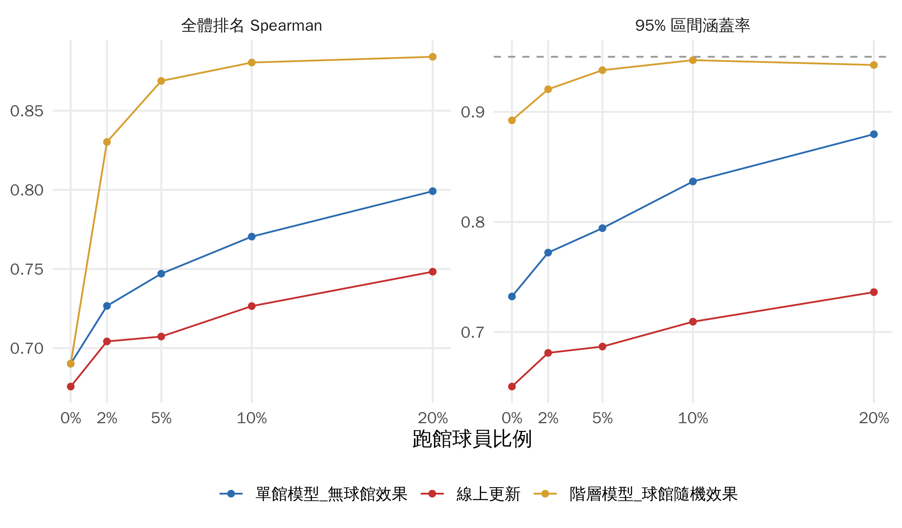
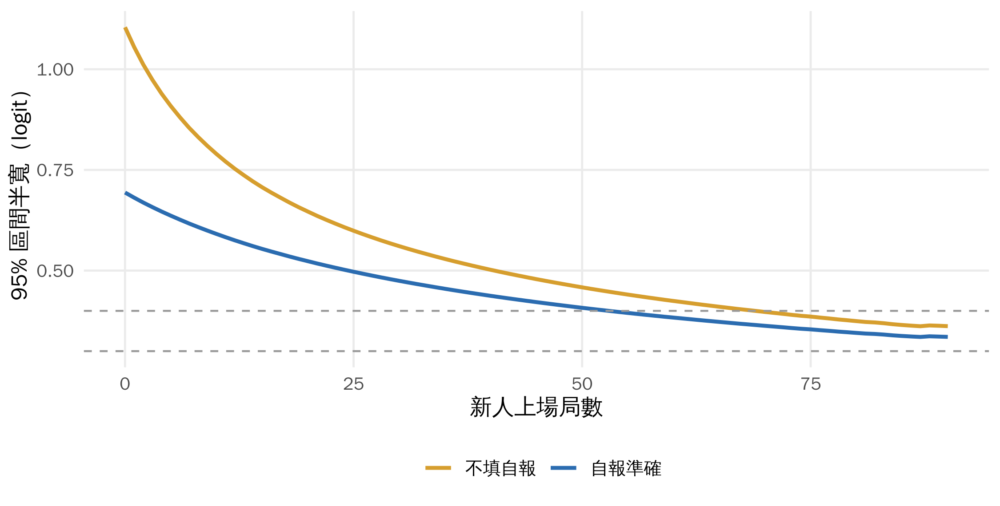
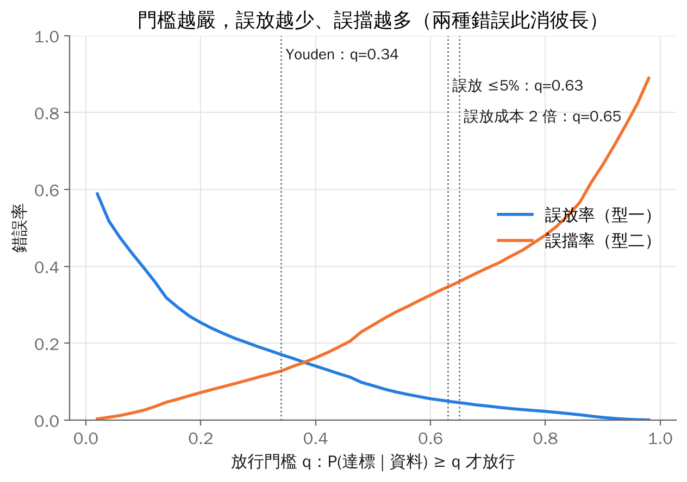
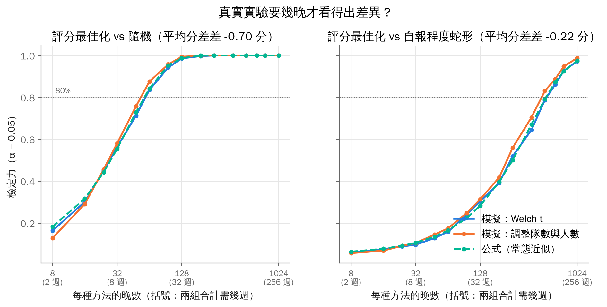

生活與研究工具路線（含模擬）
跨球館的比賽紀錄，能不能比「自報程度」更準地分級與分隊？
打排球臨打時，分級多半靠自己報；每家球館各自分級，紀錄也不互通。本專題設計一個跨球館的實力評分平台：自報程度當起點，在多家球館累積的比賽結果越多，就越相信比賽。本學期交付的是平台的統計引擎，以及用 4 家模擬球館示範的網頁原型。
主問題（唯一一項）：球員在多家球館累積比賽結果後算出的評分，是否比自報程度更準確地分級球員，並讓分隊更均衡？
事先鎖定的成功門檻（2026-11-26 確認，不看結果再改）：① 評分與真實實力的 Spearman 相關，比自報至少高 0.05；② 依評分分隊的平均分差，比依自報蛇形分隊至少少 0.2 分。兩項都以 95% 信賴區間判定。
以上都是開發期間的預試結果，只列為探索。正式判定使用事先記錄、未用過的種子（20261218000 + k，k = 1～1,000）重跑，結果出來後更新。所有球館與球員資料都是模擬的。
從這裡開始看
01 · 平台與問題
平台的每個功能，背後都是一個統計問題
使用者看到的是功能；拿掉實力估計，就只剩報名表單。所以統計是這個作品的主體。
三個痛點
1 實力不均
在政大體育館晚餐場、消夜場（一晚約 4 至 6 隊、每隊 4 至 6 人）觀察到：分隊後強者集中，比賽一面倒。
2 自報程度不準
校外球館報名多半自己選級別。有人高估、有人低估，同場的人體感都不好。
3 紀錄不互通
每家球館各自分級。在 A 館打過的紀錄到 B 館不算數，各館的「中級」標準也不一樣。
功能 ↔ 統計問題
第 2 列（分級）與第 6 列（分隊）回答主問題，其餘是支持分析，用來解釋主結果為何成立或不成立。
| # | 平台功能 | 統計問題 | 方法 | 範圍 | 結果在 |
|---|---|---|---|---|---|
| 1 | 顯示我的程度 | 實力是多少？有多不確定？ | 每分為二項的邏輯斯模型、貝氏估計與 95% 區間 | 必做 | 方法 |
| 2 | 校正自報程度 | 自報是否系統性高估或低估？哪些人誤差大？ | 配對比較、Bland–Altman 圖、誤差迴歸 | 必做 · 主問題 | 主結果 |
| 3 | 跨館同一把尺 | 各館的「中級」一樣嗎？要多少人跨館才比得起來？ | 階層模型，球館為隨機效果；模擬不同跨館比例 | 必做 | 支持分析 |
| 4 | 新手檔案 | 要打幾局評分才可信？ | 後驗區間寬度對局數的收斂；每晚更新 vs 批次估計 | 必做 | 支持分析 |
| 5 | 報名門檻 | 擋錯人、放錯人的機率各多少？ | 分類問題：誤放、誤擋、ROC 選門檻 | 必做 | 支持分析 |
| 6 | 自動分隊 | 哪種分法比賽最接近？ | 模擬實驗比較三種分法的分差與信賴區間 | 必做 · 主問題 | 主結果 |
| 7 | 分隊成效驗證 | 真實球館要試幾晚才看得出差異？ | 模擬型檢定力分析 | 選做 | 支持分析 |
| 8 | 推薦搭檔 | 哪些人一起打特別好？ | 兩人同隊交互項、強度收縮 | 選做 | 球員分析 |
本學期做到哪裡
必做
多球館模擬產生器、R 跨館貝氏實力模型（球館校正、自報先驗）、Python 每晚更新＋門檻＋分隊、評分 vs 自報的模擬比較、本網頁。
選做
搭檔默契、攻擊成功率示範、球員進步的情境。
未來工作（本學期不做）
真實帳號與登入、後端資料庫、球館系統串接、金流、真實球員資料與現場記錄。
02 · 資料
公開資料是證據，模擬資料是示範
不蒐集任何野場個人資料。兩份彼此獨立的公開資料用來設定參數與驗證模型；4 家模擬球館的資料用來回答主問題、示範平台。
| 編號 | 資料 | 規模 | 來源與授權 | 用途 |
|---|---|---|---|---|
| D1 | DataVolley 範例比賽（逐球紀錄） | 127 球 | R 套件 datavolley，MIT | 校準模擬器的得分、攻擊、發球機率 |
| D2 | 德國排球甲級聯賽每局比分 2013/14–2018/19 | 6,330 局 | R 套件 volleystat，CC0 | 樣本外驗證實力模型；與模擬器交叉驗證 |
| D3 | 4 家模擬球館 | 150 人、8 週、772 局 | 本專題 volley-sim/platform_sim.py，種子 20261126 | 回答主問題與支持分析；示範平台 |
4 家模擬球館
V01 以政大體育館野場的時段與賽制為藍本，其餘三館是虛構的。各館水準與「自評文化」都是假設值，只寫在 truth/，模型看不到。
| 館 | 時段與賽制 | 報名門檻 | 主場人數 |
|---|---|---|---|
| V01 政大體育館野場（模擬） | 週一～四晚餐場、消夜場；15 或 20 分 | 無 | 62 |
| V02 虛構球館 B（市區付費臨打） | 週二、四、六晚上；25 分 | 無 | 46 |
| V03 虛構球館 C（進階場） | 週三、六晚上；25 分 | 自報 ≥ 4 級 | 22 |
| V04 虛構球館 D（新手友善） | 週一、五、日晚上；15 分 | 自報 ≤ 3 級 | 20 |
自報程度 = 真實實力 ＋ 主場的自評文化 ＋ 整體高估 ＋ 個人誤差，再切成 1～5 級。150 人中有 17 人在兩館以上出賽，各館之間要靠他們「串起來」。
三步整合
- 校準：用 D1 的逐球資料估「實力差 → 每分得分機率」，餵給 D3 模擬器。
- 驗證模型：用 D2 德甲資料，以上半季估實力、預測下半季每局勝負（命中率 69%）。
- 交叉驗證模擬器：德甲與模擬都有 25 分局，比較兩者每局分差的分布。進行中
生成規則與欄位：volley-sim/README.md。職業選手實力遠高於臨打，只借「分布形狀與相對差距」，不直接當成臨打數值，這列為限制。
03 · 方法
R 估實力，Python 模擬、門檻與分隊
兩種語言各做一件實質的事，用 CSV 銜接；另以 R 批次估計當參考答案，獨立檢核 Python 的每晚更新。
1 模擬 4 家球館
依 D1 校準的參數，逐球模擬 8 週、150 人的跨館報名與比賽。
2 跨館實力評分
階層貝氏模型：自報當先驗、球館為隨機效果，附 95% 區間。
3 門檻與分隊
後驗機率決定是否放行；依評分最佳化分隊。
4 模擬比較
同一批夜晚用三種方法各分一次，比較分差。
R：跨館貝氏實力模型
把一局的每一分當成一次伯努利試驗，A 隊得分機率由兩隊平均實力差決定。同一局兩隊在同一館，所以球館只出現在先驗。
logit P(A 得分) = θ̄A − θ̄B + δ (nA − nB)
θi ~ N(α主場 + β·(自報i − 3), σ²)
αv ~ N(0, σv²) 各館平均實力σ、σv 用經驗貝氏（Laplace 近似的邊際概似）估計。打得少的人貼近自報先驗，打得多的人由比賽決定；沒有人跨館時，球館差距只剩先驗，模型會給很寬的區間。只用 base R 與 Matrix。
Python：三種分隊方法
● 隨機（基準）
把報名的人隨機分成 4 到 6 隊，模擬現場臨時湊隊。
● 自報程度蛇形（主問題的比較對象）
依自報 1–5 級排序，用 1→N、N→1 的蛇形順序輪流分人。這是現場最常見的做法。
● 評分最佳化
以實力評分做蛇形起點，再兩兩交換球員，縮小最強與最弱隊的差距，並盡量讓每隊有舉球員。
04 · 主結果
兩項事先門檻：目前的預試結果
判定規則事先寫死：95% 信賴區間整段達門檻算「成立」；區間含 0 算「不成立」；其餘算「方向一致但未達門檻」。三種結果都照實報告。
| 指標 | 事先門檻 | 預試結果（探索） | 預試判讀 | 確認性試驗 |
|---|---|---|---|---|
| ① 分級準確度：Spearman（評分 − 自報） | ≥ ＋0.05 | 4 館模擬：0.86 − 0.68 = ＋0.18 單館模擬：0.86 − 0.77 = ＋0.09 | 方向一致，差距遠大於門檻；預試只有單一資料集，尚無區間 | 待跑 |
| ② 分隊均衡度：平均分差（評分分隊 − 自報蛇形） | ≤ −0.2 分 | −0.22 分（95% CI −0.30～−0.14），配對 1,000 晚 換另一套模擬引擎：−0.24（−0.37～−0.10） | 方向一致但未達門檻：區間靠近 0 的一端 −0.14 沒有超過 −0.2 | 待跑 |
確認性試驗使用事先記錄的新種子 20261218000 + k（k = 1～1,000），結果出來前不再調整模型或門檻。
指標 ②：三種分隊方法的比較（預試）
| 指標 | 隨機 | 自報程度蛇形 | 評分最佳化 | 評分最佳化 − 蛇形（95% CI） |
|---|---|---|---|---|
| 平均分差（主指標） | 5.53 | 5.05 | 4.83 | −0.22 分（−0.30～−0.14） |
| 接近比賽比例（分差 ≤ 3） | 33.6% | 38.1% | 41.1% | ＋2.9 個百分點（1.5～4.4） |
| 懸殊比賽比例（分差 ≥ 10） | 12.7% | 8.6% | 7.2% | −1.4 個百分點（−2.2～−0.6） |
| 最強與最弱隊真實實力差 | 1.00 | 0.65 | 0.37 | −0.28（−0.30～−0.27） |
怎麼解讀
- 評分分隊讓最強與最弱隊的實力差縮小一半以上，但臨打只打 15 或 20 分、隨機性大，平均分差只少約 0.2 分，剛好落在門檻邊緣。
- 和隨機分隊比，差距明顯得多（平均分差 −0.70 分，接近比賽多 7.5 個百分點）；但主問題的比較對象是現場常用的自報蛇形。
- 敏感度分析：自報越不準，評分分隊的優勢越大；評分本身誤差越大，優勢越小。9 種情境下評分最佳化都最好。
05 · 支持分析
跨館、新人、門檻與實驗設計
這些分析解釋主結果為何成立或不成立，不另外宣稱「通過」。全部是模擬結果。
功能 3：跨館同一把尺

重點
- 不加球館效果，跨館排名會錯，而且區間過窄：跑館 10% 時，單館模型的 Spearman 0.77、涵蓋率 84%。
- 階層模型在跑館 5%（每館約 2 人）時就升到 0.87，10% 時 0.88。
- 完全沒有人跨館時，模型無法比較各館，但會誠實地放寬區間（涵蓋率仍有 89%）。
- 在 Python 4 館資料上，階層模型沒有比單館模型好（兩者都是 0.86）。原因是那份資料的自報本來就用全台同一把尺，自報已經把各館連起來。這是不利結果，照實列出。
功能 4：新人要打幾局評分才可信？

重點
- 自報準確的新人要打約 53 局（約 11 晚）區間才縮到一個級距。一局只有一個比分，卻要分給 4～6 位隊友，個人資訊被稀釋。
- 不填自報要 69 局：一個大致誠實的自報，抵得上約 16 局比賽。
- 自報錯 2 級，約 29 局修正一半。
- 平台建議：等級旁顯示可信度；新人先打「定級場」；每局即時更新、每晚關館後用批次模型重估。
功能 5：報名門檻要設多嚴？

重點
- 只看自報 ≥ 4 級就放行：放行的人約三分之一其實未達標。
- 改用「自報當先驗、比賽紀錄更新」的後驗機率，在差不多的正確放行率下，誤放率從約 24% 降到約 17%。
- 門檻多嚴是價值判斷；誤放成本是誤擋的 2 倍時，最佳門檻約 P ≥ 0.67。
- 約 150 局後八成的人能判定，單館累積太慢，這正是跨館的理由。
第 5、6 題完整說明數字待依新資料重跑確認
功能 7：真實球館要試幾晚？

重點
- 評分分隊 vs 隨機：效果中等（d = 0.52），每組約 64 晚，一個球館約 16 週。
- 評分分隊 vs 自報蛇形：效果小（d = 0.17），每組約 512 晚，單館要兩年多；串連 20 館約 6～7 週。單館做不到的實驗，平台做得到。
- 實驗必須以「晚」為單位：把同一晚的局當獨立樣本，名目 5% 的檢定會有 7～8% 誤報。
功能 2：誰容易高估自己？
用不含自報先驗的估計實力，推算每個人「應有的級數」。個人的高估或低估抓得到（與真值相關 0.88），可以當作平台提醒；但性別、球齡、主場等群體效果在 150 人時大多不顯著，是檢定力不足。完整的自報偏誤檢定進行中。
06 · 球員分析
實力、攻擊、位置與搭檔
以單館模擬（政大野場藍本，6 週、229 局）示範平台能產出的球員統計，對應功能 1 與功能 8。所有球員都是模擬代號；實際使用時只給本人看自己的資料，不公開排名。
查一位球員
實力在全體中的位置
最常同隊的搭檔
| 搭檔 | 同隊局數 | 默契估計（95% CI） |
|---|
默契 > 0 表示兩人同隊時表現比各自實力加總更好。所有區間都跨過 0，見下方說明。
攻擊成功率與位置
怎麼讀這張圖
主攻的得分率約 30%，接應約 27%。差距不大，而且模擬器裡攻擊得分只跟球員實力有關、不看位置，所以這裡的差異反映的是「各位置剛好分到的球員實力」，不是位置本身的效果。
區間假設每次攻擊獨立；同一位球員的多次攻擊其實相關，真正的區間會更寬。
| 位置 | 人數 | 攻擊次數 | 得分率 | 攻擊效率 |
|---|
攻擊效率 =（得分 − 失誤 − 被攔）÷ 攻擊次數。
「跟誰很合」估得出來嗎？
結論：搭檔次數可以算，但默契目前估不出來。 6 週裡共出現 1,190 種同隊組合，同隊 5 局以上的只有 302 對，最多的一對也只有 19 局。R 模型估出的每一對默契，95% 區間全部跨過 0。
R 的模擬研究也一致：即使有 32 晚資料，估計默契與真實默契的相關只有 0.18。所以分隊只用個人實力，「默契」只當探索性指標，並附上區間。
同隊次數最多的組合
| 組合 | 同隊局數 |
|---|
07 · 分隊工具
在瀏覽器裡直接分隊
Python 分隊程式透過 Pyodide 在瀏覽器裡執行，不用安裝任何東西。第一次載入約需 20 到 40 秒。
如果工具打不開
工具需要從網路載入 Pyodide。離線時可以在電腦上直接執行同一份程式：
cd python-team-split
python -m volleysplit split data/sample_signups.csv \
--ratings data/sample_ratings.csv固定示例的結果在 results/demo_night.json。補工具截圖
08 · 程式與重現
每個結果都可以從原始碼重跑
所有隨機過程都有固定種子。2026-11-26 在乾淨環境實測：60 項測試通過，兩個模擬器重跑的輸出逐位元相同。
| 資料夾 | 語言 | 做什麼 | 測試與環境 |
|---|---|---|---|
| volley-sim/ | Python | 單館與 4 館模擬資料產生器 | 固定種子；SHA256SUMS.txt 可核對 |
| r-rating-model/ | R | 實力評分模型、跨館階層模型、冷啟動、三層驗證 | 模擬研究 100～200 次重複；renv.lock |
| python-team-split/ | Python | 報名、分隊、模擬比較、門檻與實驗設計、網頁工具 | pytest 60 項；requirements.txt |
| ai-skill/ | Python | 分隊檢查 AI skill 與 5 次執行紀錄 | 含 2 個邊界案例與暴力解檢核 |
重跑主要結果
pip install -r requirements.txt
cd volley-sim && python platform_sim.py && python volley_sim.py && cd ..
cd python-team-split && python -m volleysplit simulate --reps 1000 && python -m pytest -q && cd ..
cd r-rating-model && Rscript analysis/06_platform_python.R && cd ..完整步驟與每步時間見 README。GitHub repo：StatSoft_FinalReport_Volleyball 交件版本 tag final-v1.0定稿時建立
09 · AI 協作
AI 提建議，我做判斷
使用 Claude（claude.ai 專案，多條平行工作線）。每個重要決定都記下 AI 的建議、我採納或拒絕的理由，以及對應的檔案。
- 1Define
- 2Plan
- 3Review
- 4Code
- 5Test
- 6Reflect
關鍵決策
| AI 的建議 | 我的判斷 | 影響 |
|---|---|---|
| 報名＋分隊單獨做會被看成只有表單，建議以實力估計當統計核心 | 接受；題目與場地規模由我提出 | 確立研究方向 |
| 這週開始在現場記錄野場比分 | 拒絕：沒辦法在現場收集 | 改為公開資料＋模擬資料 |
| 成果可以做 Streamlit 或 LINE 流程 | 改為 GitHub Pages 網頁 | 決定成果形式 |
| — | 我加入校外球館的經驗：自報不準、紀錄不互通 | 題目擴大成跨球館平台 |
| 主問題有 6 題並列 | 收斂成 1 個主問題，並事先鎖定兩項門檻 | 避免看結果再挑指標 |
證據檔
10 · 歷程與分工
一人一組，用外部試跑補交叉檢查
| 成員 | 負責項目 | 對應成果 | 審查人 |
|---|---|---|---|
| Iris | 題目、主問題與門檻、方法選擇、全部成果的審查與整合 | 本網站所有內容 | 外部試跑同學待補 |
里程碑
| 日期 | 里程碑 | 狀態 |
|---|---|---|
| 2026-11-26 | 題目擴大為跨球館平台；主問題與門檻鎖定；模擬器、R 模型、Python 原型、AI skill、網站完成初版 | 完成 |
| 2026-11-28 | 提案定稿交老師 | 進行中 |
| 2026-12-03 | AI 流程圖、基準比較、德甲 × 模擬交叉驗證 | — |
| 2026-12-11 | Skill 與測試回報 | — |
| 2026-12-17 | 完整測試版、外部同學試跑與重跑 | — |
| 2026-12-18 | 確認性試驗、定稿交件（23:59） | — |
各階段紀錄：ai-log/00_階段大綱.md
11 · 報告與引用
交件檔案、引用與授權
引用與授權
- D1 datavolley（範例比賽）MIT · GitHub
- D2 volleystat（德甲比分）CC0 · GitHub
- Pyodide（瀏覽器執行 Python）MPL-2.0
- Noto Sans TC 字型SIL OFL
- 檔案清單Gxx_manifest.csv
公開範圍與已知問題
- 網站、程式與模擬資料全部公開；不含任何真實球員個資。模擬球員一律用代號。
- 真實平台的個資設計列在報告：跨館累積紀錄需球員同意、評分不公開排名、只對球館顯示「是否達門檻」。
- 組別代號、教師網頁樣版尚未公布，暫以 Gxx 表示。
- 「模擬＋公開資料」已向老師詢問，待回覆。